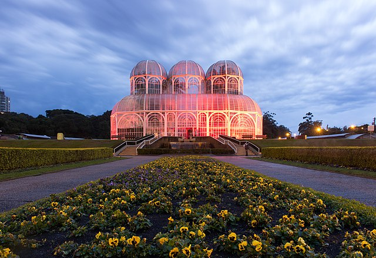
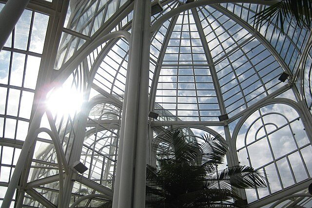
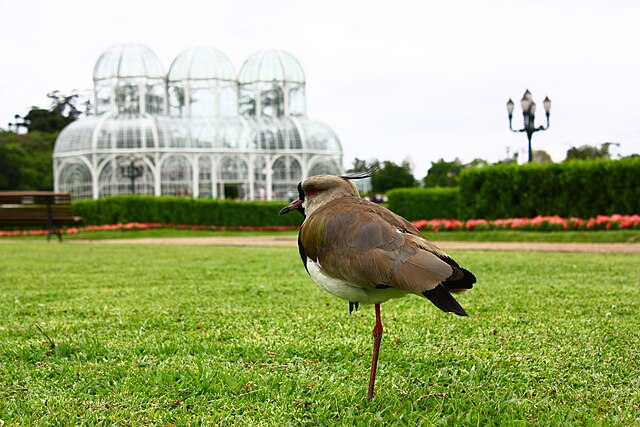
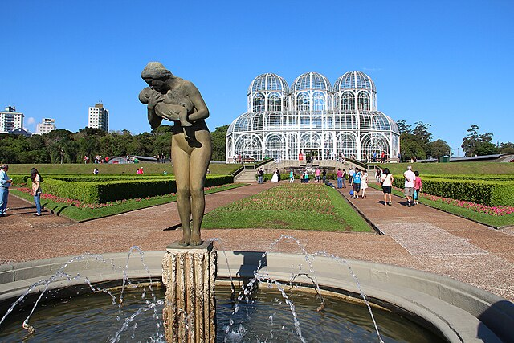
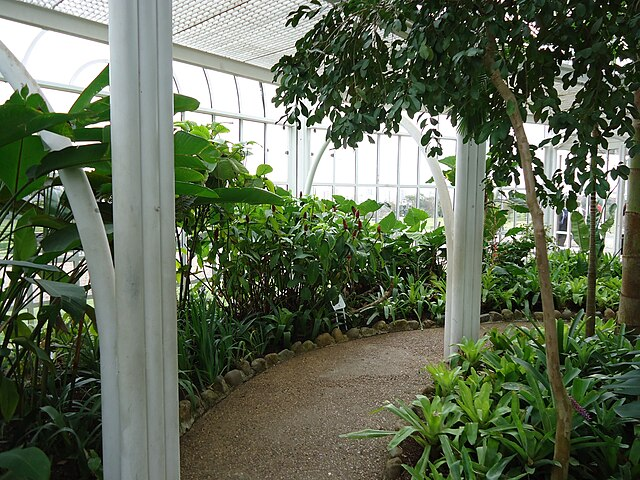

Boas vindas ao jardim botânico:
 Quero conhecer!Boas-vinda

História do jardim botânico?
"O Jardim Botânico Francisca Maria Garfunkel Rischbieter foi inaugurado em 5 de outubro de 1991. O nome oficial é uma homenagem à urbanista, uma das pioneiras no trabalho de planejamento urbano de Curitiba. O uso de suas dependências é regulamentado pelo Decreto Municipal 1.583/2011. Dos seus 178 mil metros quadrados, mais de 40% de sua área total correspondem a um Bosque de Preservação Permanente, conforme a Lei Municipal nº 62 de 1986, com nascentes formadoras dos lagos.
Galeria




-